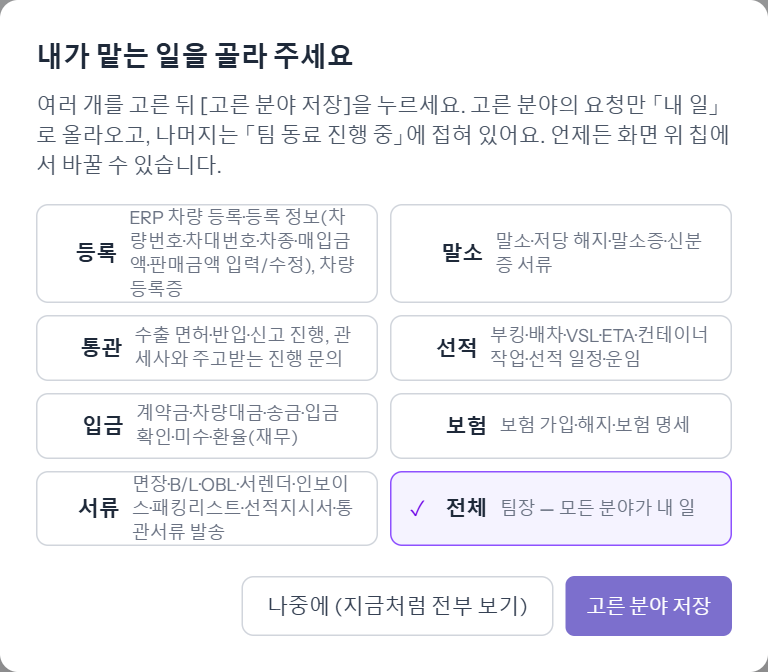
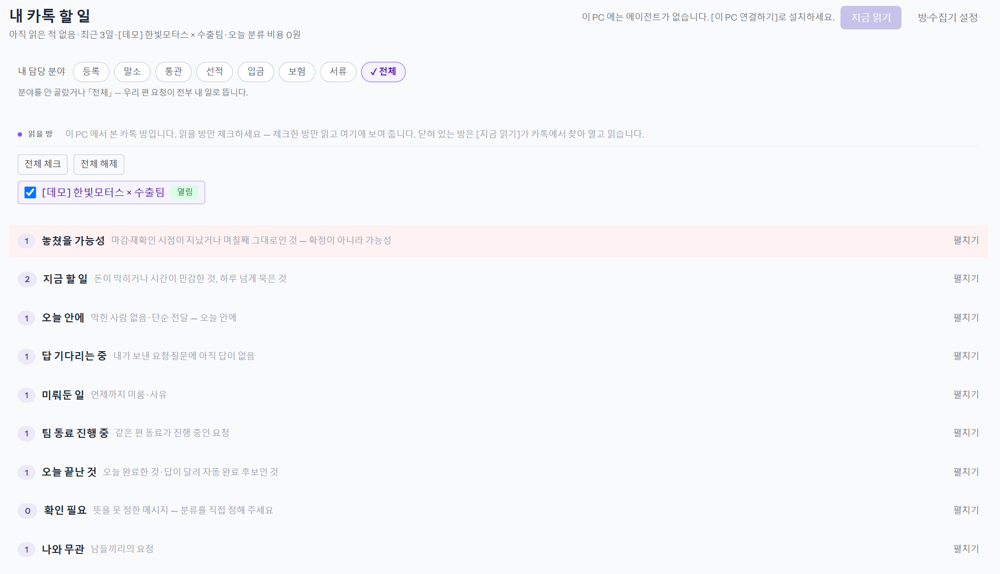
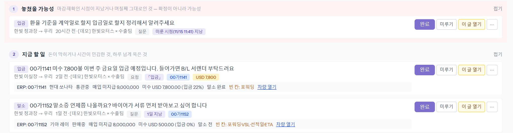
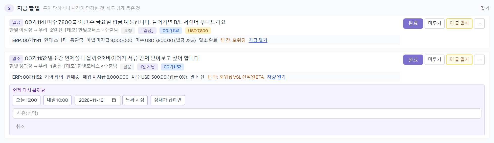
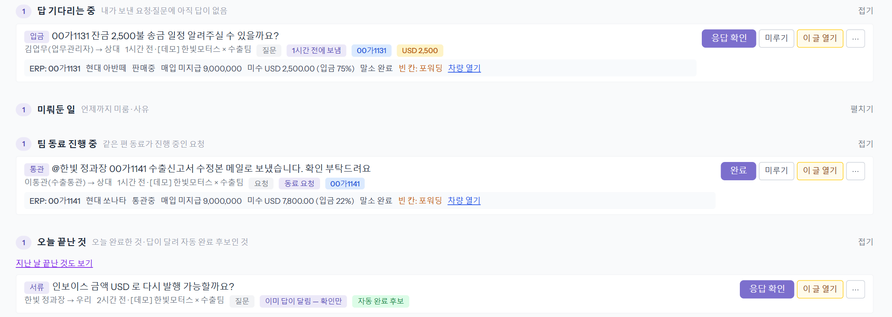

이 PC 의 카톡 방을 읽어 와 메시지마다 요청 · 질문 · 대답을 가리고, 나에게 온 일만 묶음별로 보여 줍니다. 차량번호가 나오면 그 차의 ERP 상태가 바로 아래 붙습니다. 화면은 왼쪽 메뉴 「내 카톡 할 일」입니다. 예시 방 「[데모] 한빛모터스 × 수출팀」과 대화는 가짜입니다.
내려받은 설치 파일을 더블클릭하면 검은 창이 잠깐 떴다 닫히고 끝납니다. 그 뒤로는 PC 를 켤 때 읽기 프로그램이 창 없이 같이 켜집니다. 연결이 안 돼 있으면 화면 위에 「이 PC 에는 에이전트가 없습니다」가 보입니다.
고른 분야의 요청만 「내 일」로 올라오고, 나머지는 「팀 동료 진행 중」에 접혀 있습니다. 모든 일을 보려면 「전체」. 나중에 화면 위 「내 담당 분야」 칩을 눌러 바로 바꿀 수 있습니다.

체크한 방만 읽습니다. 닫혀 있는 방은 [지금 읽기]가 카톡에서 찾아 열고 읽습니다. 다 읽으면 아래 묶음 숫자가 바뀝니다. 최근 3일 메시지만 보여 줍니다.

줄마다 보낸 사람 → 받는 편, 경과 시간, 분류와 그 묶음에 들어간 이유(「입금」 같은 돈 · 마감 단어, 1일 지남, 미룬 시점 지남)가 붙습니다. 차량번호가 있으면 아래 「ERP:」 줄에 진행 단계 · 미수 · 말소 · 빈 칸이 나오고 [차량 열기]로 바로 갑니다.

오늘 16:00 · 내일 10:00 · 날짜 지정 · 상대가 답하면 중 하나를 고르고, 필요하면 사유를 적습니다. 그때까지 「미뤄둔 일」에 있다가, 시점이 지나면 「놓쳤을 가능성」으로 다시 올라옵니다.

「답 기다리는 중」은 내가 보낸 요청 · 질문에 아직 답이 없는 것입니다. 답이 오면 「오늘 끝난 것」에 「자동 완료 후보」로 내려가니 [응답 확인]을 누릅니다. 「팀 동료 진행 중」은 같은 편 동료가 상대에게 보낸 요청입니다.
